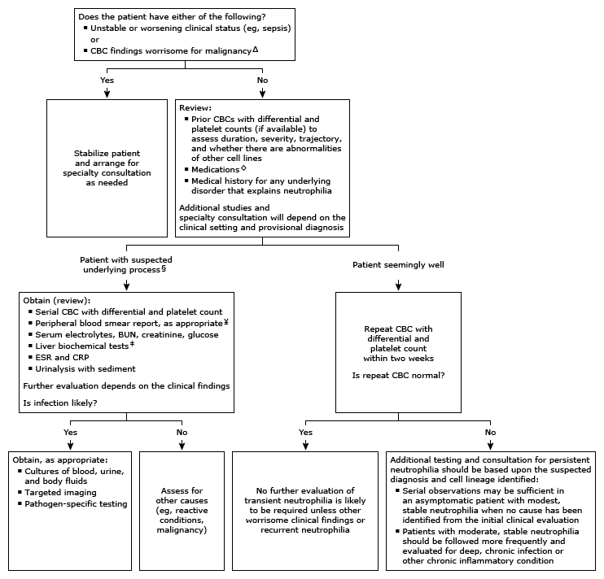

ANC: absolute neutrophil count; BUN: blood urea nitrogen; CBC: complete blood count; CRP: C-reactive protein; ESR: erythrocyte sedimentation rate; RBC: red blood cell; WBC: white blood cell.
* The total WBC count in healthy adults normally varies from 4400 to 11,000 cells/microL. The majority are mature neutrophils. Interpretation of a specific abnormal test result should be based upon the reference range reported by the laboratory.
¶ A high neutrophil count is usually due to an ANC above 7700 cells/microL (WBCs/microL × 70%).
Δ Worrisome CBC findings concerning for malignancy:◊ Medications associated with neutrophilia include glucocorticoids, recombinant granulocyte colony-stimulating factor (G-CSF), granulocyte-macrophage colony-stimulating factor (GM-CSF), lithium, anesthetic agents, beta-agonists, epinephrine, cocaine.
§ Suspect an underlying process in patients who have worrisome clinical findings (eg, worsening or moderately high WBC count >20,000/microL [20 × 109/L], abnormalities of other cell lines, and/or systemic symptoms [fever, night sweats, or unintentional weight loss] or signs [organomegaly or lymphadenopathy]).
¥ Review of the peripheral blood smear by an experienced individual may identify abnormalities not detected by automated machines.
‡ These include alanine aminotransferase (ALT), aspartate aminotransferase (AST), bilirubin, and alkaline phosphatase.